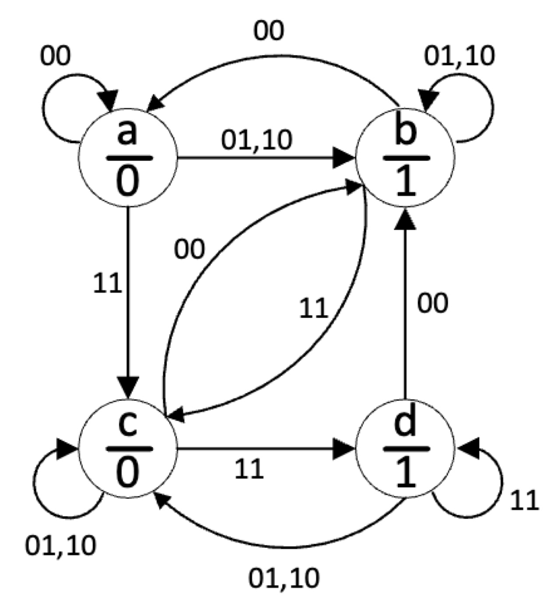
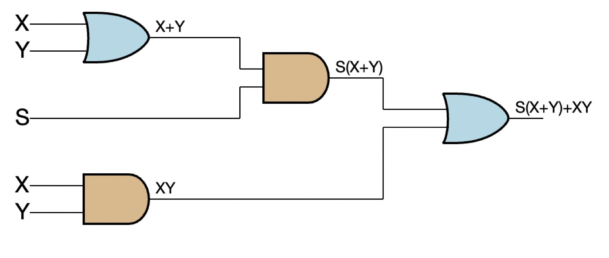
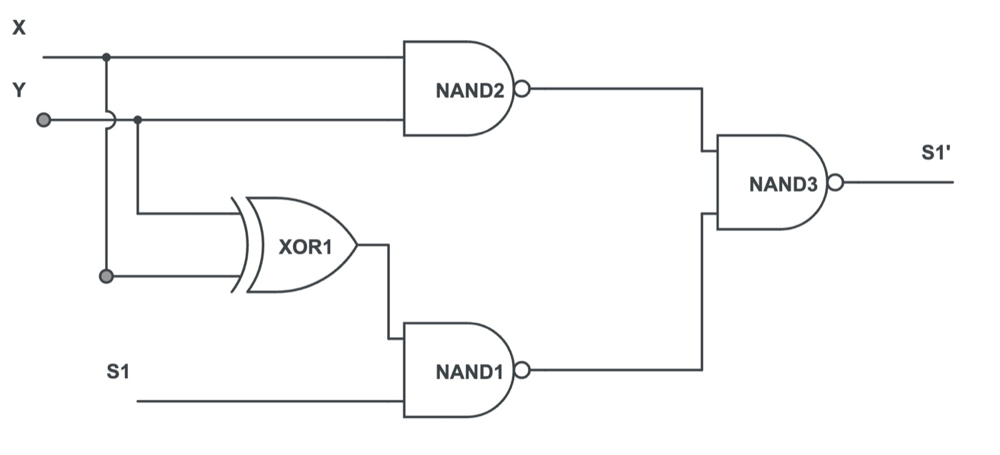
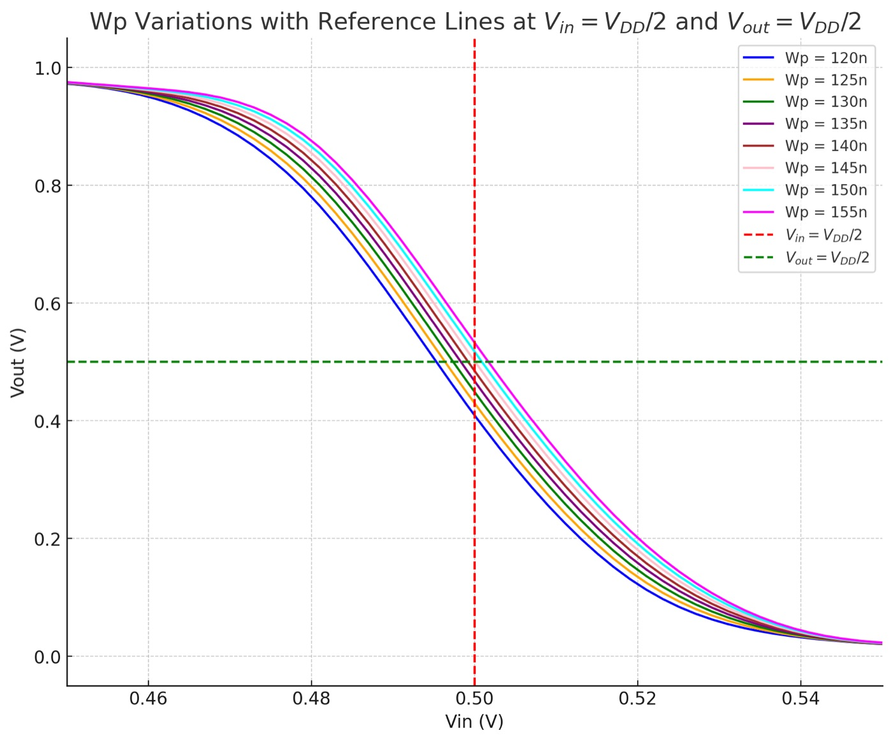
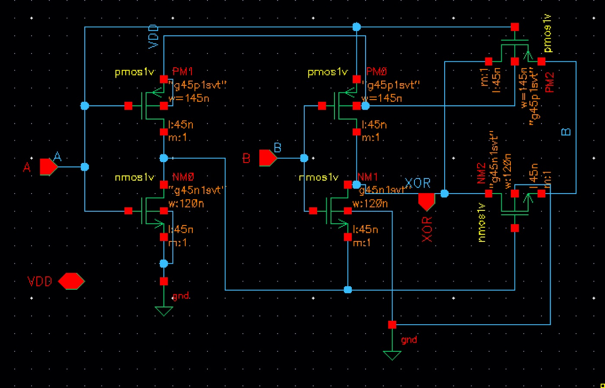
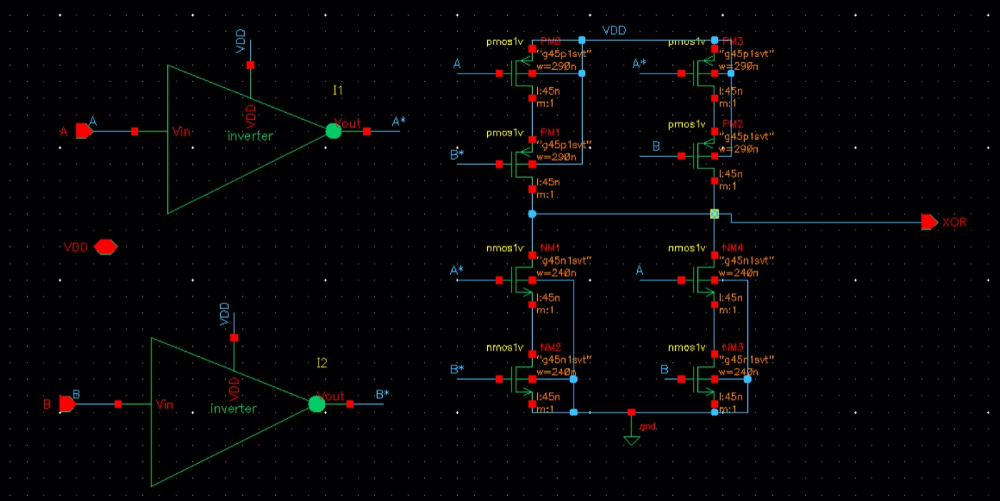
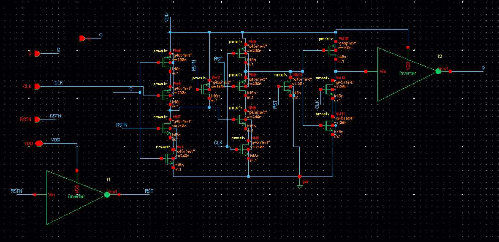
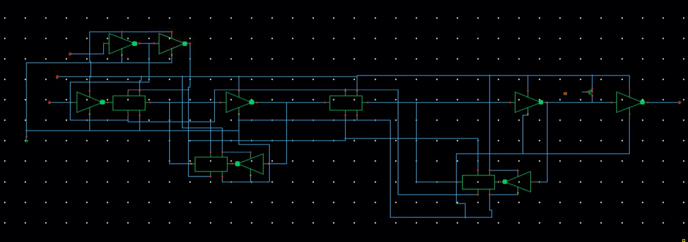
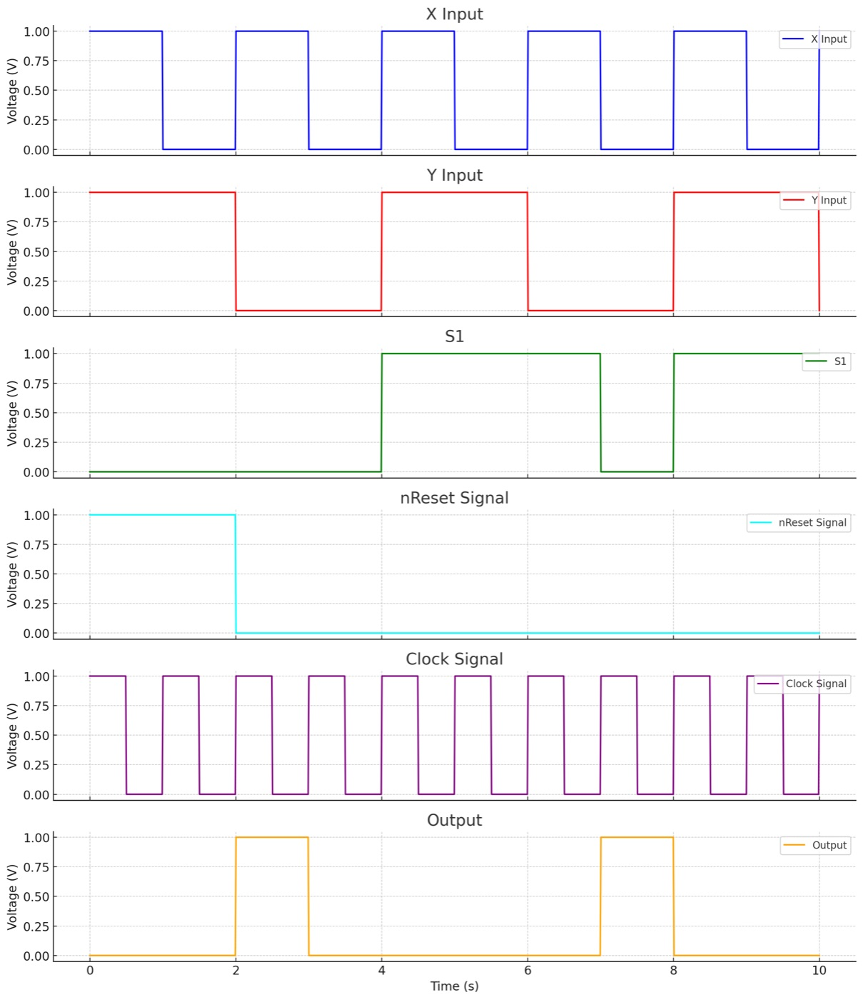

Optimized Serial Adder in 45 nm
A serial adder built as a two-bit Moore state machine, designed and simulated transistor by transistor in Cadence Virtuoso on a 45 nm process at 1 V. The goal was to push speed and power together: fewer gates, the right gates, and every transistor sized on purpose. ELEC 402 (Introduction to VLSI Systems), UBC, Fall 2024.
The machine
The state holds two bits. S1 is the carry and S0 is the sum bit of the last addition; each clock takes a pair of input bits X, Y and produces the next sum and carry. Because the output is high exactly in states B (01) and D (11), the output is just a wire from S0. No output logic at all.

Minimizing the logic
Karnaugh maps of the next-state table reduce the two next-state functions to
S0' = S1 ⊕ X ⊕ Y // sum
S1' = XY + S1·(X ⊕ Y) // carryWritten this way, X ⊕ Y appears in both equations. One XOR gate feeds both the sum and the carry path (a fan-out of two), which is far cheaper than the textbook sum-of-products version with two NANDs, a NOR and six inverters. The carry's final OR is bubble-pushed into NANDs so the whole carry path is NAND-only.


Sizing the inverter first
Every other gate is sized from the inverter, so it came first. Widening the PMOS balances the pull-up against the faster NMOS and centres the switching threshold at VDD/2, but costs power. Sweeping WP from 120 to 150 nm, 145 nm gave the most symmetric transfer curve, for about 9% more switching power than the minimum. I took the trade for better noise margins and kept the 145/120 ratio for every gate after it.

| WP (nm) | 120 | 130 | 140 | 145 | 150 |
|---|---|---|---|---|---|
| Avg. power (nW) | 79.58 | 82.16 | 85.48 | 86.54 | 88.51 |
Choosing the XOR
Since the XOR sits on both paths, it was worth comparing two designs at the same sizing ratio: a transmission-gate XOR and a conventional 14-transistor static XOR.


| Gate | tpLH (ps) | tpHL (ps) | Avg. power (µW) |
|---|---|---|---|
| Transmission-gate XOR | 60.9 | 42.3 | 0.26 |
| Static XOR | 136.2 | 175.5 | 4.35 |
The transmission-gate version was 2–4× faster and used about 17× less power, so it went in. The NANDs got the same treatment: series NMOS doubled in width so the pull-down matches the inverter, landing at 64.1 / 73.3 ps and 0.8 µW.
The flip-flop, and what didn't work
I wanted a True Single-Phase Clock (TSPC) flip-flop: one clock phase, few transistors, low clock load. It latched at the right time, but Q would not hold its value. Adding capacitance would have fixed it at the cost of the very delay and power I was trying to save, so I switched to a transmission-gate flip-flop with a reset added through a pull-up PMOS before the output inverter.


It still came out quick: 58.8 ps clock-to-Q rising, 65.3 ps falling, about 3.1 µW per transition, and a four-flop test array ran near 10 GHz on its own.
Putting it together

I tested every transition out of every state (all 16) and measured power for each. Average power across them was 9.87 µW, ranging from 7.5 to 12.2 µW depending on how many nodes toggle. The circuit ran correctly up to 1 GHz.

What limits it, and what I'd do next
Above 1 GHz the flip-flops start missing setup and hold, and the carry path (XOR into two NANDs) is the critical path. Two fixes follow directly:
- Pin ordering on the critical path. Connect the late-arriving XOR-side NAND to the input nearest the output of the final NAND, reducing the Elmore delay the late signal sees.
- Size the carry chain with logical effort. Compute the path effort from the XOR and NAND logical efforts and the flip-flop load, take its cube root as the per-stage effort, and size each gate backwards from the load.
Tools: Cadence Virtuoso (schematic, ADE / Maestro), GPDK045 45 nm, Spectre.